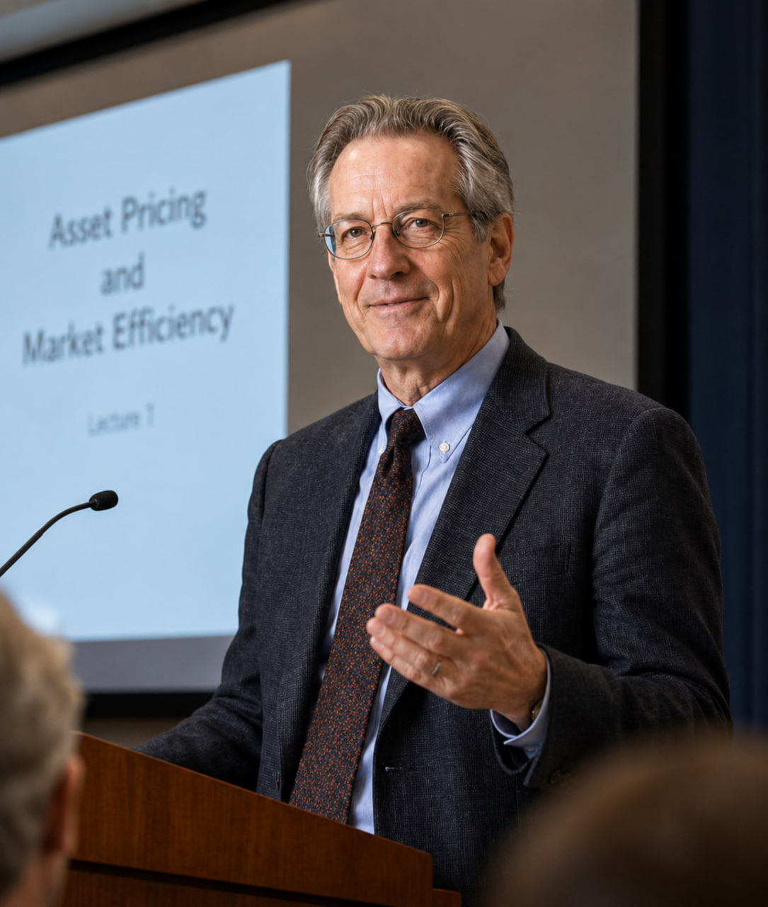

Investidor internacional, professor de economia e especialista em gestão de ativos com mais de 30 anos de experiência em mercados globais de capitais.
30+Anos de experiência profissional
6Certificações profissionais
4Redes de investimento continentais
2015Fundação da WeFortuneAsset
Data de Nascimento23 de março de 1970
NacionalidadeEstados Unidos
Residência AtualSão Paulo, Brasil
EspecialidadesAlocação global, ciclos macro, valuation e gestão de risco
Sobre Wallace Sterling Caldwell
Disciplina de capital construída entre ciclos, instituições e continentes.
Wallace Sterling Caldwell atuou na América do Norte, Europa, Ásia e América Latina, envolvendo-se em pesquisa macroeconômica, finanças corporativas, fusões e aquisições internacionais, investimentos estratégicos e gestão global de ativos.
Sua abordagem combina a disciplina analítica de um economista, o julgamento prático de um banqueiro de investimento e a consciência de risco de um gestor de ativos. Ele observa as forças profundas por trás dos mercados: como ciclos econômicos influenciam o custo de capital, como estruturas industriais moldam valor corporativo e como o capital flui entre países, setores e classes de ativos.
Em períodos de expansão, prioriza avaliação de risco; em momentos de pânico, começa a buscar oportunidades de valor. Em vez de perseguir oscilações de curto prazo, enfatiza fluxo de caixa, estrutura de capital, vantagens competitivas e sustentabilidade de longo prazo.
“Use os ciclos para definir direção, a diversificação para reduzir riscos, a disciplina para proteger capital e o tempo para realizar valor.”
Formação Acadêmica
Base acadêmica em economia, finanças, ciclos de mercado e alocação internacional de capital.
1989-1993
Harvard University | Bacharelado em Economia
Caldwell recebeu formação sistemática em microeconomia, macroeconomia, econometria, comércio internacional e teoria dos mercados financeiros.
Foco em política monetária, ciclos econômicos e fluxos internacionais de capital.
Participação em projetos de pesquisa de mercados financeiros que formaram a base teórica de sua carreira global de investimentos.
1993-1995
Master of Science in Finance
Seus estudos de pós-graduação concentraram-se em gestão de investimentos, finanças corporativas, valuation de valores mobiliários, análise de risco financeiro e alocação internacional de capital.
Pesquisa de mestrado: “Cross-Market Asset Allocation Under Changing Economic Cycles.”
Integração de indicadores macroeconômicos, dados financeiros corporativos e orçamento de risco em uma estrutura de decisão de investimento.
Sistema Profissional
Credenciais que sustentam um método centrado em risco.
2002
CPA dos EUA
Fortaleceu sua leitura de demonstrações financeiras, qualidade de lucros, sustentabilidade de caixa, estruturas de dívida e desempenho real dos negócios.
2004
CFA
Ampliou sua estrutura de pesquisa em análise macroeconômica, ações, renda fixa, gestão de portfólio, tendências setoriais e valuation de ativos.
2005
CAIA
Expandiu sua atuação em private equity, imóveis, infraestrutura, commodities, ativos alternativos, estruturas complexas e risco de liquidez.
2007
CFP
Integra estratégias de alocação, necessidades de liquidez, tolerância ao risco e objetivos patrimoniais de longo prazo para empreendedores e famílias.
2009
FRM
Durante a crise financeira global, fortaleceu sua expertise em risco de mercado, crédito, liquidez, testes de estresse e proteção contra perdas.
2014
CVA
Aprimorou capacidades em valuation corporativo, modelagem financeira, precificação de M&A, análise de empresas privadas e margem de segurança.

Abordagem de Investimento
Risco antes de retorno. Disciplina antes de emoção.
Caldwell prioriza fluxo de caixa corporativo, estrutura de capital, vantagens competitivas e sustentabilidade de longo prazo acima dos movimentos de curto prazo. Seu sistema combina identificação de risco, leitura de ciclos econômicos, análise de valor, alocação global e execução disciplinada.
Risco em Primeiro Lugar
Respeito aos Ciclos Econômicos
Investimento Orientado a Valor
Alocação Global
Execução Disciplinada
Trajetória
Da pesquisa econômica à gestão global de ativos.
01
Base de Pesquisa
Centro Universitário de Pesquisa Econômica | Pesquisador
Caldwell iniciou sua carreira em pesquisa econômica, com foco em mercados financeiros, comércio internacional, política monetária e ciclos macroeconômicos.
Participou de projetos de pesquisa para empresas e instituições financeiras.
Forneceu análise de dados e suporte à avaliação de políticas.
Construiu uma disciplina de pesquisa multidimensional envolvendo ambiente político, dados econômicos, precificação de mercado e fundamentos corporativos.
Contribuiu para relatórios sobre juros, fluxos internacionais de capital e riscos de mercado.
02
Mercados de Capitais
Banco Internacional de Investimento dos EUA | Mercados de Capitais & Finanças Corporativas
Ele passou da pesquisa macroeconômica para operações globais de mercado de capitais, atuando em soluções de financiamento corporativo, avaliação financeira e gestão de projetos de investimento.
Participou de M&A internacional, reestruturações corporativas, financiamento via dívida e investimentos estratégicos.
Construiu uma estrutura integrada de análise financeira, pesquisa de valores mobiliários, valuation corporativo e alocação multiativos.
Ingressou no núcleo consultivo da firma para estruturação de transações, valuation e avaliação de risco.
Priorizou sustentabilidade da estrutura de capital pós-transação, capacidade de pagamento de dívida e criação de valor de longo prazo.
03
Estratégia de Risco Europeia
Instituição Financeira Internacional Alemã | Investimento Estratégico & Gestão de Risco
Na Europa, Caldwell trabalhou com pesquisa de mercado, análise setorial, investimentos internacionais, avaliação de risco e estratégia de gestão de ativos.
Foco em manufatura industrial, energia, infraestrutura, serviços financeiros e empresas exportadoras.
Participou de projetos internacionais de investimento e cooperação estratégica.
Reforçou um estilo conservador moldado por disciplina de capital, gestão de risco e valor operacional de longo prazo.
Durante a crise financeira global, ajudou a desenvolver redução de ativos de risco, reservas de liquidez e rebalanceamento de portfólio.
04
Mandato Ásia-Pacífico
Divisão de Hong Kong | Consultor Sênior & Head de Estratégia Ásia-Pacífico
Em Hong Kong, liderou estratégia de mercados Ásia-Pacífico, alocação institucional de ativos e atividade de investimento internacional.
Pesquisou China continental, Hong Kong, Singapura, Japão, Coreia do Sul e Sudeste Asiático.
Participou de M&A internacional, projetos industriais e programas globais de alocação de ativos.
Desenvolveu estratégias de longo prazo para investidores institucionais, empreendedores e family offices.
Expandiu redes de cooperação nos principais centros financeiros asiáticos e aprofundou expertise em valuation e precificação de M&A.
05
Liderança Fundadora
WeFortuneAsset | Fundador & Chairman
Após quase duas décadas em instituições financeiras internacionais, Caldwell fundou a WeFortuneAsset e passou a liderar filosofia de investimento, estratégia global, estrutura de risco, padrões de pesquisa e decisões relevantes.
Construiu a firma em torno de criação de valor de longo prazo, preservação de capital e alocação global.
Desenvolveu uma rede internacional de pesquisa cobrindo América do Norte, Europa, Ásia-Pacífico e América Latina.
As áreas centrais incluem gestão global de ativos, advisory corporativo, alocação internacional, valuation e M&A, análise macroeconômica, risco financeiro e educação de investidores.
Decisões relevantes passam por avaliação de macroeconomia, tendências setoriais, valor corporativo, estrutura de capital, liquidez e cenários extremos.
Estratégia Brasil & América Latina
Conhecimento local, parcerias de longo prazo e precificação racional de risco.
Por que Brasil
O interesse de Caldwell pelo Brasil envolve tamanho de mercado, recursos naturais, agricultura competitiva globalmente, consumo em expansão, fintech, infraestrutura e transição energética.
Foco de Pesquisa
Em São Paulo, lidera estudos sobre inflação brasileira, juros, câmbio, estrutura fiscal, ciclos de commodities e desenvolvimento corporativo doméstico.
Setores Prioritários
Cadeias agrícolas, energia e recursos naturais, infraestrutura, serviços financeiros e inovação tecnológica formam as principais áreas regionais.
Presença Estratégica
A WeFortuneAsset prepara operações brasileiras por meio de equipes locais de pesquisa, redes de parceria corporativa e programas de educação de investidores.
Estrutura de Decisão de Investimento
Perguntas usadas por Caldwell antes de comprometer capital.
01
Em que ambiente de ciclo econômico, juros e crédito estamos?
02
Este setor possui demanda real de longo prazo?
03
O que cria a vantagem competitiva sustentável da empresa?
04
Os lucros corporativos se convertem consistentemente em fluxo de caixa real?
05
A dívida existente pode se tornar um peso em uma desaceleração?
06
A valuation atual oferece margem de segurança suficiente?
07
Se a tese estiver errada, qual é a perda potencial máxima?
08
No pior cenário, o portfólio como um todo permanece estável?